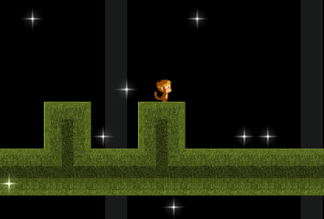
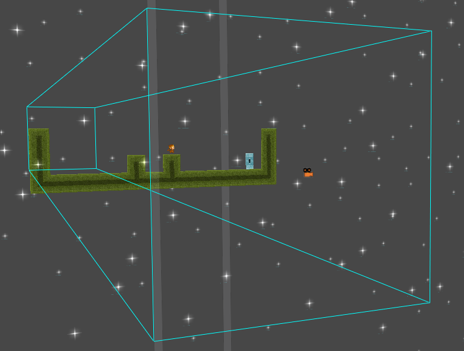
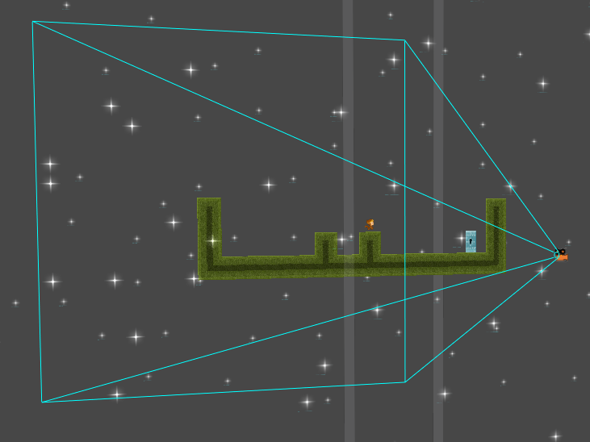
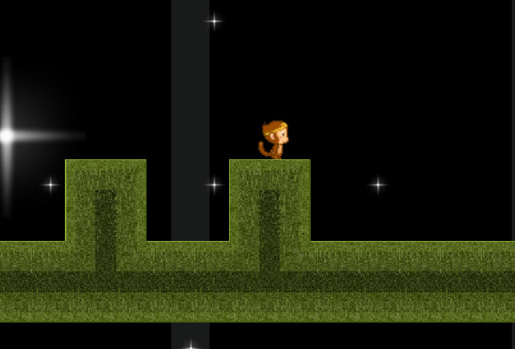

Camera Parallax
This lesson teaches how to make a parallax effect with a foreground and a background.
Open Previous Project
Open the project created for the Tile Editor and Sprite Sheets lesson
Level Setup
Player Object
Create a very simple player and its character controller.
- Command :
CreateSpriteor - In Properties Window
- Set Name to: Player
- Under Transform
- Set Translation’s z-value to: 0.01
Using Past Scripts
You have already created player controllers and camera controllers, so once you have the hang of it, there’s no point in making it a second time. Just like how we were able to import a stock script into our game, we too can import our own past scripts.
- Command :
ShowProjectFolderor - Locate and enter the project folder for the Following Camera lesson
- Enter the Content folder
This is the folder that contains all resources for our project. Recall, we had both a player controller and a camera controller, so we can retrieve both scripts.
- Drag both Movement.z and CameraLogic.z into the Zero Editor
- Save your project
- Select the Player object
- In Properties Window
Camera Object
We imported a camera controller that follows the player. Now we can attach it and set its properties.
- Select the Camera object
- In Properties Window
- Add a CameraLogic Component
- Under CameraLogic
- Set TargetObject to: :/Player
Backgrounds and Foregrounds
In 2D video games, parallax refers to the illusion of 3D by having multiple layers moving at different speeds. Because Zero is a 3D engine, rather than simulating the illusion, we simply make it 3D. We’ll set the “different speeds” by changing the Z coordinate of our “layers.” The “layers” will be represented by additional tile maps.
We’ll make two tile maps, the foreground and the background.
The foreground and the background will contain sprites to give us the sense of depth.
You’ll need to obtain the Twinkle Sprite:
{kind=link}
- Browse to and select Twinkle.png
- Press the Add and Close button
Background Tile map
Press the button
In the Tools Window
- Press the CreateTileMap button
- Select the Twinkle sprite
In the Level Window
- Draw the Twinkle tiles
In Properties Window
- Set Name to: Background
- Under Transform
- Set the Translation Z to: -100
- Under Multisprite
- Set BlendMode to: Additive
{kind=link}
Some images are rotated in 3D to give a better perspective on how the level is set up
Make a similar Foreground Tile map with the following properties:
Foreground Tile map
- Press the button
- In the Tools Window
- Press the CreateTileMap button
- Select the Twinkle sprite
- In the Level Window
- Draw the Twinkle tiles
- In Properties Window
- Set Name to: Foreground
- Under Transform
- Set the Translation Z to: 30
- Under Multisprite
- Set BlendMode to: Additive
{kind=link}
Now run the project:

Was this the result you were looking for? Let’s check the status of the camera. By Selecting the camera object in Mode3D, we can see how it sees the world.

You can Toggle between the modes by entering their respective commands. Refer to the Camera Controls sidebar in the Game Objects lesson for more information.
The camera is in a mode called orthographic. We can see this set in the Camera’s properties listed as its ProjectionMode. Orthographic means the distance of an object from the camera does not affect the object’s size. This is not realistic to us because we always see the world in a perspective view.
In Properties Window
Under Camera
- Set ProjectionMode to: Perspective
The camera should now look similar to this:


The objects are now scaled by depth.
Now we know how to make background layers in our 2D scene.
| orphan: |
|---|